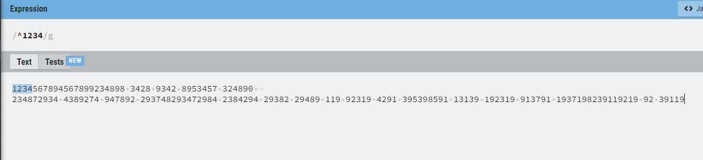

C++98版本本身是不支持正则表达式的,C++11版本自身是支持的,在Linux下是有正则表达式的库的,还有boost标准库也是支持正则表达式的
1. ".": 匹配除"\n"之外的任何单个字符,若要匹配包括"\n"在内的任意字符,需使用诸如"[\s\S]"之类的模式
2. "^": 匹配输入字符串的开始位置,不匹配任何字符,要匹配"^"字符本身,需使用"\^"转义

如上图所示,就是匹配一个段字符串的开始位置,中间有空格也是一段字符串
3. "$": 匹配输入字符串结尾的位置,不匹配任何字符,要匹配"$"字符本身,需使用"\$"
和^作用类似,这两个组合就是强制从字符串的开头匹配到结尾,而且不会匹配出子串的情况
4. "*": 零次或多次匹配前面的字符或子表达式,等效于"{0,}",如"\^*b"可以匹配"b"、"^b"、"^^b"
5. "+": 一次或多次匹配前面的字符或子表达式,等效于"{1,}",如"a+b"可以匹配"ab"、"aab"、"aaab"
6. "?": 零次或一次匹配前面的字符或子表达式,等效于"{0,1}",如"a[cd]?"可以匹配"a"、"ac"、"ad"。
当此字符紧随任何其他限定符"*"、"+"、"?"、"{n}"、"{n,}"、"{n,m}"之后时,匹配模式是"非贪心的"。
"非贪心的"模式匹配搜索到的、尽可能短的字符串,而默认的"贪心的"模式匹配搜索到的、尽可能长的字符串。
如,在字符串"oooo"中,"o+?"只匹配单个"o",而"o+"匹配所有"o"
特别要注意"."符号没有贪心/非贪心模式,因为他只是匹配单个字符,这已经是最短的了
注意上图中,此时是贪心模式,尽可能的做到一段子符串中匹配到更多的字符,现在匹配到了两段,但是每一段都匹配到了最多的字符数。
此时上图是非贪心模式,尽可能的做到一段子符串中匹配到最少的字符,现在匹配到了很多端,但是每一段都只有一个字符。
7. "|": 将两个匹配条件进行逻辑"或"运算,如正则表达式"(him|her)"匹配"itbelongstohim"和"itbelongstoher",但是不能匹配"itbelongstothem."
8."\": 转义字符 9. "\w": 匹配字母或数字或下划线,任意一个字母或数字或下划线,即A~Z,a~z,0~9,_中任意一个 10. "\W": 匹配任意不是字母、数字、下划线的字符 11. "\s": 匹配任意的空白符,包括空格、制表符、换页符等空白字符的其中任意一个,与"[\f\n\r\t\v]"等效 12. "\S": 匹配任意不是空白符的字符,与"[^\f\n\r\t\v]"等效 13. "\d": 匹配数字,任意一个数字,0~9中的任意一个,等效于"[0-9]" 14."\D": 匹配任意非数字的字符,等效于"[^0-9]"
15."\b": 匹配一个字边界,这个边界就是字符与非字符的边界如下图所示
\b在前就是只匹配字符串前面有没有边界,\b在后也是类似的。如果前后都加则是在一段字符串中找一段与其他字符串分开的子串。
16."\B": 非字边界匹配
作用和\b类型且相反
17. "\f": 匹配一个换页符,等价于"\x0c"和"\cL"
18. "\n": 匹配一个换行符,等价于"\x0a"和"\cJ"
19. "\r": 匹配一个回车符,等价于"\x0d"和"\cM"
20. "\t": 匹配一个制表符,等价于"\x09"和"\cI"
21. "\v": 匹配一个垂直制表符,等价于"\x0b"和"\cK"
22. "\cx": 匹配"x"指示的控制字符,如,\cM匹配Control-M或回车符,"x"的值必须在"A-Z"或"a-z"之间,如果不是这样,则假定c就是"c"字符本身
23. "{n}" : "n"是非负整数,正好匹配n次,如,"o{2}"与"Bob"中的"o"不匹配,但与"food"中的两个"o"匹配
24. "{n,}" : "n"是非负整数,至少匹配n次,如,"o{2,}"不匹配"Bob"中的"o",而匹配"foooood"中的所有"o","o{1,}"等效于"o+","o{0,}"等效于"o*"
25. "{n,m}": "n"和"m"是非负整数,其中n <= m,匹配至少n次,至多m次,如,"o{1,3}"匹配"fooooood"中的头三个o,'o{0,1}'等效于'o?'
26. "[xyz]" : 字符集,匹配包含的任一字符,如,"[abc]"匹配"plain"中的"a";
27. "[^xyz]" : 反向字符集,匹配未包含的任何字符,匹配除了"xyz"以外的任意字符,如,"[^abc]"匹配"plain"中的"p"
28. "[a-z]" : 字符范围,匹配指定范围内的任何字符,如,"[a-z]"匹配"a"到"z"范围内的任何小写字母
29. "[^a-z]" : 反向范围字符,匹配不在指定的范围内的任何字符,如,"[^a-z]"匹配任何不在"a"到"z"范围内的任何字符
30. "()" : 将多个匹配标识分组在一起,并创建一个捕获组,用于提取子字符串或使用反向引用。
一个正则表达式中最多可以保存9个,它们可以用编号"1"到"9"的符号来引用。编号为"0"的捕获组,指的是正则表达式整体。
目前了解普通捕获组就够用了,命名捕获组用到再说吧
如上图所示,可以看出网页上面已经为我们分出每一组匹配到的内容
31. "(?:pattern)" : 匹配pattern但不捕获该匹配的子表达式,即它是一个非捕获匹配,不存储供以后使用的匹配
如上图所示,和【30】的情况相比,原来的捕获组1和捕获组3都没有被捕获了,只有原来的捕获组2还能被捕获成了现在的捕获组1
32."(?=pattern)" : 非获取匹配,正向肯定预查。
在任何匹配pattern的字符串开始处匹配查找字符串,该匹配不需要获取供以后使用。
如"Windows(?=95|98|NT|2000)"能匹配"Windows2000"中的"Windows",但不能匹配"Windows3.1"中的"Windows"。
预查不消耗字符,也就是说,在一个匹配发生后,在最后一次匹配之后立即开始下一次匹配的搜索,而不是从包含预查的字符之后开始
33. "(?!pattern)" : 非获取匹配,正向否定预查。
在任何不匹配pattern的字符串开始处匹配查找字符串,该匹配不需要获取供以后使用。
如"Windows(?!95|98|NT|2000)"能匹配"Windows3.1"中的"Windows",但不能匹配"Windows2000"中的"Windows"
共同点:
(?:pattern)与(?=pattern)都匹配pattern,但不会把pattern结果放到Matches的集合中。
区别:
(?:pattern) 匹配得到的结果包含pattern,(?=pattern) 则不包含。如：
从上图可知,已经没有捕获组了,只是简单的匹配